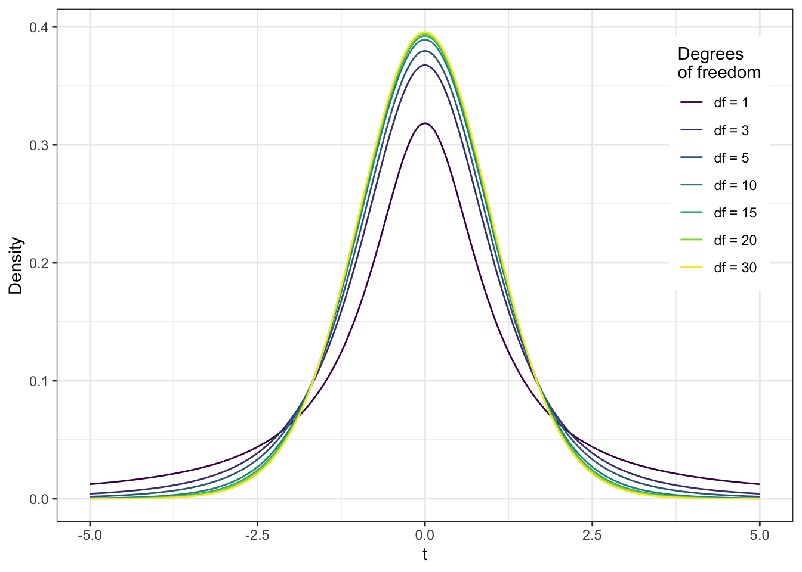

10 Корреляционный анализ
Мы рассмотрели метод, позволяющий тестировать гипотезу об отсутствии связи между категориальными переменными. Теперь посмотрим, что делать, если нас интересуют гипотезы о связи между двумя количественными переменными.
10.1 Ковариация
Мы хотим описать имеющиеся взаимосвязи как можно проще и опираясь на то, что у нас уже есть. Мы знаем, что дисперсия, или вариация, заключает в себе информацию об изменчивости признака. Если мы хотим исследовать взаимосвязь между признаками, то логично будет посмотреть, как изменяется один из признаков при изменении другого — иначе говоря, рассчитать совместную изменчивость признаков, или ко-вариацию (covariance).
Как мы её будем считать? Подумаем графически. Расположим две переменные на осях и сопоставим каждому имеющемуся наблюдению точку на плоскости.
Отметим средние значения по обеим переменным.
Разумеется, что у нас наблюдаются отклонения наблюдений от среднего. Заметим, что отклонения могут быть сонаправленными — одновременно по обеим переменным \(x\) и \(y\) в положительную или отрицательную сторону (зеленые стрелки) — или разнонаправленными — в положительную сторону по одной из переменных и в отрицательную по другой, и наоборот (рыжие стрелки).
При этом обратим внимание, что точки на графике, отображающие наши наблюдения, как бы идут более-менее в направлении какой-то прямой — серой, как на картинке:
И чем отклонения от средних по обеим переменным будут более согласованы, тем точнее они будут идти по этой прямой.
Получается, мы можем на основании согласованности отклонений уже следать заключение о направлении связи, ведь произведение отклонений по обеим величинам будет положительно, если отклонения сонаправленны, и отрицательно, если они разнонаправленны. Остается только понять, как совместные отклонения организованы «в среднем» — это и будет ковариацией двух величин:
\[ \mathrm{cov}(x, y) = \frac{1}{n-1} \sum_{i=1}^n (\bar x - x_i) (\bar y - y_i) \]
Кстати, а что такое ковариация переменной с самой собой?
Вот что
\[ \mathrm{cov}(x, x) = \frac{1}{n-1} \sum_{i=1}^n (\bar x - x_i) (\bar x - x_i) = \\ = \frac{1}{n-1} \sum_{i=1}^n (\bar x - x_i)^2 = \sigma^2(x) \]Это все, конечно, кул, однако важно отметить, что ковариация улавливается только линейную составляющую взаимосвязи между признаками — мы говорили выше, что точки идут как бы по некотороый прямой — поэтому если \(\mathrm{cov}(x,y) = 0\), то мы можем сказать, что между переменными нет линейной взаимосвязи, однако это не значит, что между этими переменными нет никакой другой зависимости.
Если же ковариация отлична от нуля, то
- если её значение положительно, то мы можем заподозрить прямую связь между переменными,
- если же её значение отрицательно, то мы можем предположить обратную связь между переменными.
У ковариации есть два важных недостатка:
- это размерная величина, поэтому её значение зависит от единиц измерения признаков,
- она зависит от дисперсий признаков, поэтому по её значению можно определить только направление связи (прямая или обратная), однако ничего нельзая сказать о силе связи.
Поэтому нам нужно как-то модицифировать эту статистику, чтобы мы могли больше вытащить из её значения.
10.2 Корреляция
Раз ковариация зависит от дисперсии, то можно сделать некоторые математические преобразования, чтобы привести эмпирические распределения к какому-то одному виду — сделать так, чтобы они имели одинакое математическое ожидание (среднее) и одинаковую дисперсию. С этой задачей прекрасно справляется стандартизация. Напоминаю формулу:
\[ z_i = \frac{x_i - \bar x}{s} \] После такого преобразования математическое ожидание нашего распределения будет равно нулю, а стандартное отклонение — единице. Это избавит нас от влияния дисперсии на значение ковариации. Ковариация двух стандартно нормально распределенных величин называется корреляцией (correlation).
\[ \mathrm{cov}(z^{(x)}, z^{(y)}) = \frac{1}{n-1} \sum_{i=1}^n z^{(x)} z^{(y)} = \mathrm{corr}(x, y), \] где \(z^{(x)}\) и \(z^{(y)}\) — стандартизированные величины \(x\) и \(y\) соответственно.
Корреляцию можно выразить через ковариацию:
\[ \mathrm{corr}(x, y) = \frac{1}{n-1} \sum_{i=1}^n \Big( \frac{\bar x - x_i}{s_x} \Big) \Big( \frac{\bar y - y_i}{s_y} \Big) = \frac{1}{s_x s_y} \Big( \frac{1}{n-1} \sum_{i=1}^n (\bar x - x_i)(\bar y - y_i) \Big) = \frac{\mathrm{cov}(x, y)}{s_x s_y} \]
Если внимательно всмотреться в формуле, то можно обнаружить, что корреляция это не что иное, как стандартизированное значение ковариации.
Коэффициент корреляции имеет четкие пределы изменения: \([-1; \,1]\). Крайнее левое значение говорит о том, что присутствует полная обратная линейная взаимосвязь, крайнее правое — что присутствует полная прямая линейная взаимосвязь. Как и ковариация, корреляция ловит только линейную составляющую связи, поэтому нулевое значение корреляци показывает, что между переменными отсутствует линейная взаимосвязь. Это всё еще не значит, что связи нет вовсе.
Преимущество корреляции над ковариацией в том, что она отражает не только направление, но и силу связи:
| Значение коэффициента | Интерпретация |
|---|---|
| \(-1.0\)–\(-0.9\) | очень сильная обратная связь |
| \(-0.9\)–\(-0.7\) | сильная обратная связь |
| \(-0.7\)–\(-0.5\) | средняя обратная связь |
| \(-0.5\)–\(-0.3\) | слабая обратная связь |
| \(-0.3\)–\(0\) | очень слабая обратная связь |
| \(0\)–\(0.3\) | очень слабая прямая связь |
| \(0.3\)–\(0.5\) | слабая прямая связь |
| \(0.5\)–\(0.7\) | средняя прямая связь |
| \(0.7\)–\(0.9\) | сильная прямая связь |
| \(0.9\)–\(1.0\) | очень сильная прямая связь |
Пронаблюдать можно тут.
10.3 Корреляция Пирсона
То, что мы только что обсудили, называется коэффициентом корреляции Пирсона. Пирсон, как вы могли обратить внимание, много чего успел наделать на благо статистики — вот ещё и корреляцию нам придумал. Этот коэффициент применим, когда мы работаем с двумя нормально распределенными величинами или хотя бы двумя величинами, измеренями в метрических шкалах. Еще раз напомним чере его формулу:
\[ r_{x_1x_2} = \frac{\sum_{i=1}^n(\bar x_1 - x_{i1})(\bar x_2 - x_{i2})}{\sqrt{\sum_{i=1}^n (\bar x_1 - x_{i1})^2 \cdot \sum_{i=1}^n (\bar x_2 - x_{i2})^2}} \]
Теперь задумаемся — хоть это и неприятно — можем ли мы сказать по значению коэффициента корреляции, отличается ли он от нуля? Вспомнив, что мы занимаемся статистикой, сразу ответим — нет. Поскольку мы рассчитываем коэффициент корреляции на данных, а они содержат всякую вариативность и неопределенность, нам придется предпринять дополнительные усилия, чтобы заявить, что обнаруженная нами связь статистически значима.
10.3.1 Тестирование статистической значимости коэффициента корреляции
Итак, мы, как обычно, хотим ответить на вопрос, есть ли в генеральной совокупности связь между двумя изучаемыми переменными. Если в генеральной совокупности связь между признаками отсутствует, то есть \(\rho_{x_1x_2} = 0\), будет ли равен нулю \(r_{x_1x_2}\)? Можно с уверенностью сказать, что не будет, так как выборочный коэффициент корреляции — случайная величина. А мы помним, что вероятность принятия случайной величиной своего конкретного значения равна нулю.
Тогда необходимо протестировать статистическую гипотезу:
\[ H_0: \rho_{x_1x_2} = 0 \\ H_1: \rho_{x_1x_2} \neq 0 \]
Нулевая гипотеза гласит, что между признаками нет линейной взаимосвязи, альтернативная говорит — что есть. Обычно мы не закладываем в гипотезу направление связи, потому что и положительная, и отрицательная нас устроит — это мы будем потом уже содержательно интерпретировать.
Гипотезу сформулировали, теперь надо подобрать статистический критерий. Он вот:
\[ t = \frac{r_{ij}}{\sqrt{\frac{1 - r^2_{ij}}{n-2}}} \overset{H_0}{\thicksim} t(\text{df} = n-2) \]
Это t-критерий, и значение его статистики подчиняется t-распределению, или распределению Стьюдента. Число степеней свободы определяется по формуле в скобках и равно \(n-2\), где \(n\) — число наблюдений.
Само t-распределение выглядит так:

Может показаться, что оно похоже на нормальнгое распределение — и это правда, но только с 30+ степеней свободы. А до этого можно наблюдать высокие хвосты.
Собственно, далее согласно уже знакомому нам алгоритмы тестирования статистических гипотез мы рассчитываем статистику критерия, p-value для неё и делаем статистический вывод. Все так же, как и в случае с хи-квадратом.
10.3.2 Доверительный интервал для коэффициента корреляции
Помимо того, что мы обязаны оценить статистическую значимость коэффициента корреляции, обычно мы еще строим доверительный интервал для него. С построением интервальной оценки возникают некоторые сложности. Мы не можем использовать рассмотренное выше распределение Стьюдента, так как оно строится для случая, когда верна нулевая гипотеза об отсутствии связи. Если же мы строим интервальную оценку, нас интересует случай наличия связи.
Статистики долго думали и придумали
вот это безобразие
именуемое z-преобразованием Фишера:
\[ z(r_{x_1x_2}) = \frac{1}{2} \ln \frac{1 + r_{x_1x_2}}{1 - r_{x_1x_2}} \thicksim \mathcal{N}(\bar z_{x_1x_2}, \tfrac{1}{n-3}), \]
где \(n\) — объём выборки, а \(\bar z_{ij}\) получается расчётом по указанной формуле после подставления точечной оценки коэффициента корреляции.
Интервальную оценку для величины \(z_{ij, \mathrm{true}}\) уже можно построить, используя нормальное распределение. Далее путём обратного преобразования получаются значения границ интервала \((\rho_{ij,\min}, \; \rho_{ij,\max})\).Впрочем, не очень важно, что именно они там придумали, потому что всё равно мы доверим построить доверительный интервал машине. Нам важно понять, как интерпретировать получившийся результат.
- Если в доверительный интервал коэффициента корреляции попадает \(0\), значит он статистически равен нулю, то есть между изучаемыми переменными взаимосвязи нет.
- Если в доверительный интервал коэффициента корреляции не попадает \(0\), значит он статистически отличен от нуля, то есть между изучаемыми переменными взаимосвязь есть.
10.3.3 Размер эффекта для коэффициента корреляции
Еще одна статистика, которая нам необходима — это размер эффекта. На этот моменте мы начинаем беседовать об ошибке второго рода. До этого мы говорили только об ошибке первого рода и начились её контролировать с помощью уровня значимости. Теперь вот повогорим об ошибке второго рода.
В целом, размер эффекта — это численное выражение силы взаимосвязи между переменными в генеральной совокупности.
Здесь нам необходимо призадуматься, и осознать, что вообще-то корреляция сама по себе выражает силу взаимосвязи между переменными. И, да, это правда — размером эффекта для коэффициента корреляции является сам коэффициент корреляции. Удобненько.
Так, к сожалению, будет не всегда, но вот с корреляцией это так. Ну, и хорошо.
Рекомендации по интерпретация [абсолютного значения] коэффициента корреляции с точки зрения размера эффекта для социальных наук такие:
| Значение коэффициента | Размер эффекта |
|---|---|
| \(0.10\) | Малый (small) |
| \(0.30\) | Средний (medium) |
| \(0.70\) | Большой (large) |
10.3.4 Расчет объема выборки для корреляционного анализа
Размер эффекта нам требуется для расчета объема выборки, необходимой для корректного корреляционного анализа. В чем идея?
Мы говорили, что ошибку второго рода мы контролирует в помощью статистической мощности, которая равна \(1-\beta\), где \(\beta\) — вероятность ошибки второго рода. Конвенционально достаточным уровнем статистической мощности считается \(80\%\), то есть нам надо предпринять все усилия, чтобы достичь такого уровня статистической мощности. А что мы можем предпринять? Да, в общем-то только собрать достаточное количество наблюдений. Значит, надо рассчитать, сколько нам надо наблюдений, чтобы зафиксировать эффект, если он есть.
Собственно, статистическая мощность, размер эффекта и объем выборки связаны вот как:
↑ объем выборки → ↑ статистическая мощность
↑ размер эффекта → ↓ требуемый объем выборкиИтого, если у нас есть ожидаемый размер эффекта и требуемый уровень статистической мощности, то мы можем рассчитать необходимый объем выборки. Формул не будет — мы рассчитываем объем выборки в специально обученном ПО.
Что надо запомнить?
- Уровень статистической мощности (power) по умолчанию выбираем \(80\%\)
- Размер эффекта можем взять из предыдущих исследований, на основе которых планируем текущее — это лучше — либо из рекомендаций по интерпретации размеров эффекта
- Например, в психологии большие корреляции — это вообще большая редкость, поэтому берем значения для малого или среднего размеров эффекта.
Вгоняем это в программу, и оно там все само магически считается.
10.3.5 Визуализация корреляции
Как можно отображать взаимосвязи между переменными? Один пример графика мы уже видели в самом начале — это была диаграмма рассеяния (scatterplot). Это достаточно простой и понятный график: по осям идут две количественные переменные, точки отображают наблюдения. В итоге получается облако точек. Чем более они вытянуты в линию, тем больше значение корреляции, чем более облако точек «круглое», тем значение кореляции меньше. Дополнительно обычно на таком графике отображают ещё линию тренда, чтобы более наглядно визуализировать линейный компонент взаимосвязи переменных. Построение такой линии отдельная довольно интересная задача — мы вскоре ею займемся и назовем это регрессионный анализ.
Ниже примеры диаграмм рассения. Это визуализация результатов валидизации психометрической методики: на первом графике корреляция между итоговыми баллами двух опросников, а на втором — баллов по отдельным шкалам валидизируемого опросника и общим баллом другого опросника.

Можно потренироваться визуально определять корреляцию по скаттерплотам.
Бывает, что нас интересует связь не между двумя какими-либо отдельными переменными, а много попарных корреляций между несолькими переменными. Для этого есть визуализация, называемая корреляционная матрица (corrplot). По «осям» идут переменные, а на пересечении цветом отображается корреляция между переменными. Обычно холодные оттенки используются для положительных значений, а теплые — для отрицательных. Чем интерсивнее оттенок, тем больше значение корреляции. В данном случае на графике отображены корреляции между пунктами отдельной шкалы опросника.

10.4 Коэффициенты корреляции для разных шкал
Выше мы подробно обсудили корреляцию Пирсона и отметили, что этот коэффициент применяется для метрических шкал да ещё и нормально распределенных величин. А что же делать, если в наших данных не так?
10.4.1 Параметрические и непараметрические критерии
Все статистические методы деляться на два типа: параметрические и непараметрические.
- Параметрические методы работают с непосредственно с параметрами распределения исследуемых переменных.
- Так, для вычисления корреляции Пирсона мы используем среднее и стандартное отклонение.
- Как следствие, одно из условий применимести таких методов — нормальное распределение изучаемых переменных.
- Если это требование не выполнено, мы не можем быть достаточно уверены в том, что статистический метод дает надежные результаты — как минимум, потому что сами среднее и стандартное отклонение в случае скошенных распределения не особо хорошо описывают данные.
- Непараметрические методы не используют в вычислениях собственных статистик параметры распределений.
- Например, изученный нам хи-квадрат относится к непараметрическим критериям.
- Они работают либо с частотами, либо в рангами — в зависимости от того, какие переменные мы анализируем.
- Поэтому если требования нормальности распределения не выполнено, используют методы этой группы.
Практически каждый параметрический критерий имеет своего непараметрического собрата. Отметим, что сам статистический вывод в случае непараметрических критериев осуществляется точно так же, как и в случае параметрических.
10.4.2 Непараметрические коэффициенты корреляции
Дла разных шкал разработаны разные коэффициенты корреляции. Оценки коэффициентов будут рассчитываться по-разному, но логика тестирования статистических гипотез остаётся одинаковой.
| Переменная \(X\) | Переменная \(Y\) | Мера связи |
|---|---|---|
| Интервальная или отношений | Интервальная или отношений | Коэффициент Пирсона |
| Ранговая, интервальная или отношений | Ранговая, интервальная или отношений | Коэффициент Спирмена |
| Ранговая | Ранговая | Коэффициент Кенделла |
У непараметрических критериев формулы несколько зубодробительны, поэтому оставим их покоиться с миром. В статистическом ПО нужно будет просто выбрать подходящий критерий из предложенных.
10.5 Другие корреляции
Этот раздел для отчаянных. Вас никто об это ни на экзамене, ни, возможно, в жизни не спросит.
Можно коррелировать не только количественные и ранговые шкалы между собой, но и качественные тоже:
| Переменная \(X\) | Переменная \(Y\) | Мера связи |
|---|---|---|
| Дихотомическая | Дихотомическая | \(\phi\)-коэффициент |
| Дихотомическая | Ранговая | Рангово-бисериальный коэффициент |
| Дихотомическая | Интервальная или отношений | Бисериальный коэффициент |
10.5.1 \(\phi\)-коэффициент
Этот коэффициент позволяет рассчитать корреляцию между двумы дихотомическими шкалами. Он основан на расчёте статистики \(\chi^2\). По двум дихотомическим переменным строится, как мы знаем, таблицу сопряженности и рассчитывается \(\chi^2\). Далее он нормируется следующим образом, чтобы получить значения от 0 до 1, которые можно интерпретироват аналогично коэффициенту корреляции:
\[ \phi = \sqrt{\frac{\chi^2}{N}}, \]
\(N\) — общее количество наблюдений.
10.5.2 Бисериальный коэффициент корреляции
Этот коэффициент используется для вычисления корреляции между количественной (\(y\)) и категориальной (\(x\)) шкалой и рассчитывается следующим образом:
\[ r = \frac{\bar x_1 - \bar x_2}{s_y} \sqrt{\frac{n_1 n_2}{N(N-1)}}, \] где \(\bar x_1\) — среднее по элементам переменной \(y\) из группы \(x_1\), \(\bar x_2\) — среднее по элементам \(y\) из группы \(x_2\), \(s_y\) — стандартное отклонение по переменной \(y\), \(n_1\) — число элементов в группе \(x_1\), \(n_2\) — число элементов в группе \(x_2\), \(N\) — общее число элементов.
Важно отметить, что несмотря на то, что значение коэффициента может быть как положительным, так и отрицательным, это не влияет на интерпретацию. Это одно из исключений из общего правила.
10.5.3 Рангово-бисериальный коэффициент корреляции
Если у нас не количественная, а ранговая шкала, то применяется рангово-бисериальный коэффициент:
\[ r = \frac{2(\bar x_1 - \bar x_2)}{N}, \] где \(\bar x_1\) — средний ранг в группе \(x_1\), \(\bar x_2\) — средний ранг в группе \(x_2\), \(N\) — общее количество наблюдений.